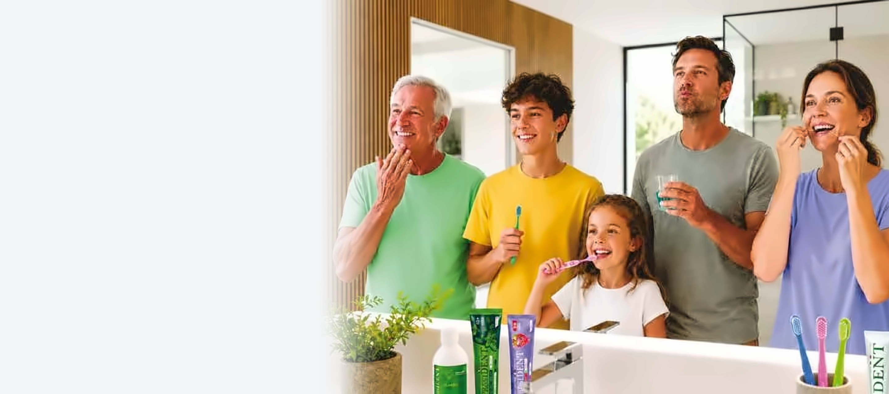

LA GAMMA
Da due referenze a nove linee al servizio della salute dentale
Dal suo debutto con due referenze, PRESIDENT è cresciuto fino a sviluppare una gamma completa di prodotti per l’igiene orale, formulati con ingredienti sicuri e delicati.
Una risposta specifica a ogni esigenza: dalla protezione quotidiana alla cura più avanzata, dalla prevenzione della carie alla salute delle gengive, fino all’igiene dei più piccoli.
 Foto in arrivo
Foto in arrivo